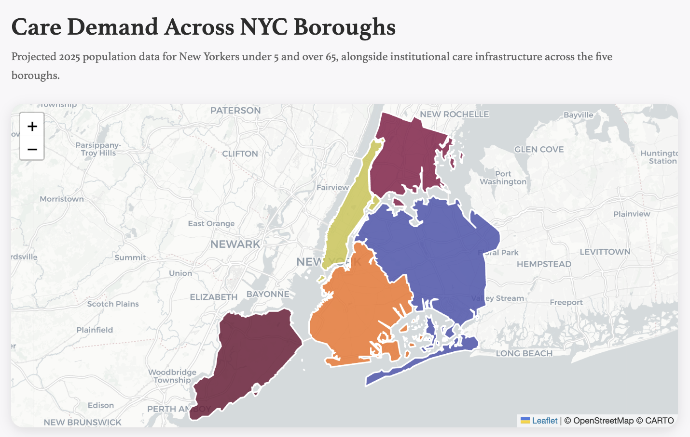
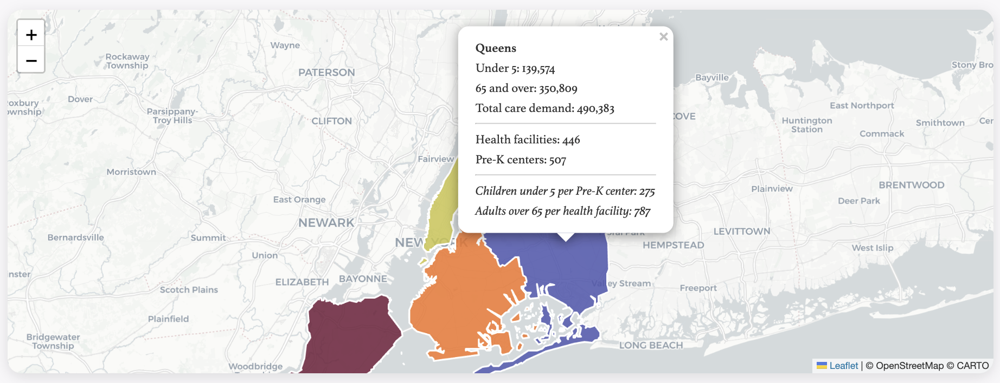
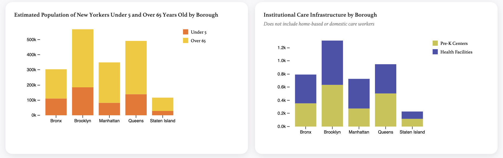

Data Visualization
In a data visualization course at Parsons, I learned HTML, CSS, and JavaScript — skills I used to build this portfolio. The course covered foundational principles alongside contemporary questions about subjectivity, bias, and the false neutrality of data.
My final project investigated care demand across New York City's five boroughs, mapping the populations of children under 5, adults over 65, and the public facilities meant to serve them.
Findings
New York City's five boroughs face a significant and growing care gap. In Queens, there is one Universal Pre-K center for every 275 children under 5. Across all boroughs, adults over 65 outnumber health facilities by ratios of 687 to 1 or greater, with Queens again facing the highest burden at 951 seniors per facility.
These figures reflect only institutional care: licensed health centers and public Pre-K programs. They do not account for the substantial care provided in private homes by domestic workers — nannies, home health aides, and elder care workers — whose labor is largely invisible to public data systems and unprotected by standard labor law.
As New York's population ages and demand for care grows, the workers who fill this gap deserve recognition, fair wages, and legal protection. To learn more, visit domesticworkers.org.


